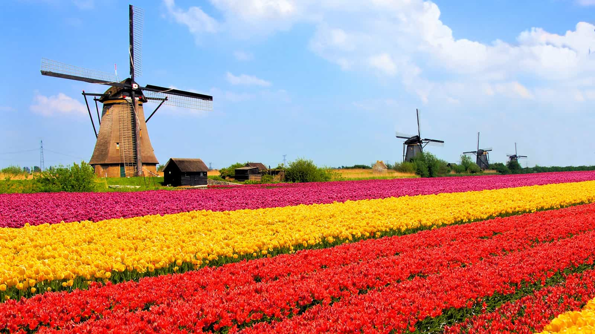
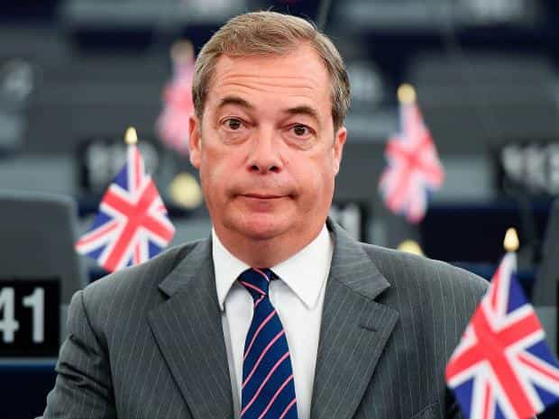
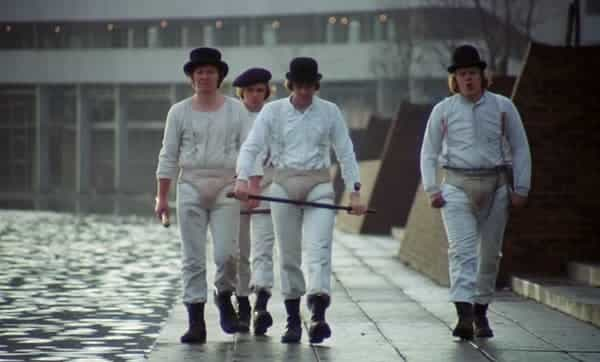

When people think of overcrowded European states, the first thought in the minds of many will be the Netherlands. Yet England is actually the most densely populated major European country, with minuscule Malta in the Mediterranean being the only place across all of Europe with more people per square kilometer or mile.
If only a medium-sized sociopolitical or economic crisis grips Europe or the wider world, England stands a good chance of collapse and starvation. Over 50% of the United Kingdom’s food comes from other countries, and one would suspect that crammed-in England produces much less food per head of population than more airy Scotland or Wales.

Nope, even the Netherlands isn’t as crowded as Mother England.
In 2013, population density in England was a disastrous 411 people per square kilometer (ca. 1,065 people per square mile). With a very large chunk of the island of Great Britain taken up by independence-minded Scotland and comparatively rural Wales, England’s serious space issues are generally forgotten, with “experts” considering the whole of the United Kingdom and not its most populous (and very overpopulated) constituent nation.
Since the pro-mass migration Blair government took office in 1997, population density in England has gone up a massive 10%. Because a proper, lasting Brexit is several years away, the measurement is set to rise even further. If the present Conservative British government manages to arrest this growth, resource and land-deprived England will nevertheless remain grossly exposed to any sizeable regional or international emergency for years to come.
Talk of immigration and overpopulation = “racism”

Former United Kingdom Independence Party (UKIP) and Brexit leader Nigel Farage has faced 25 years of being called a “racist” for sounding the alarm bells on immigration and overpopulation in England and the rest of the United Kingdom.
Despite the glory of the majority vote for Brexit last year, public “discourse” in Britain still largely revolves around anti-mass migration activists being called “racists.” When pundits crunch numbers on television, the figures they come up with are usually the estimates of people arriving, not the additional negative strain these newcomers place on the very limited land available.
Let’s not kid ourselves: England is absolutely tiny. It is four times smaller than similarly populated metropolitan France. The country can in no sense sustain itself materially and current levels of immigration are doing nothing but exacerbate the problem.
England can easily be starved–just like what nearly happened in the Second World War
You don’t need a Hitler to try and starve England anymore.
One of the reasons why the modern ignorance about English overpopulation is so tragic comes from 20th century history. Hitler’s fleet of U-boats were perilously close to starving England and Britain in the early 1940s, sinking millions of tons of Allied shipping, especially from the United States. Of any country in Europe, island-bound England should be acutely aware of the risks of being cut off from its imports, mostly notably foodstuffs, and promote sustainable demographics.
We may not have a World War on our plate now, but anything from a moderate trade tussle to a regional military conflict could lead to widespread, lethal misery in England and its population of 53 million. Anything close to a Hitler will not be required. Instead of planning for a national emergency, though, authorities in the United Kingdom, England most of all, have gleefully stuck their heads in the sand.
What happens when social decline meets material catastrophe?

A more multicultural, starved version of A Clockwork Orange is awaiting England.
We have enough problems in the West already. So what happens when a lack of food or other necessities meets our long-term social decay? The results will be truly frightening. England in particular is a mass of weakly-bonded “citizens.” Multiculturalism has left millions of people arguably sharing economic ties alone. Sans a prosperous or even functioning economy, how will people living on an overpopulated plot of land relate to one another peacefully?
As a matter of future life and death, England needs to get very serious very quickly about its terrible overpopulation problem. Things may seem fine and dandy for now, but just wait until a long-overdue existential crisis hits the country.
So long live England, if it can last.
Read More: England Set To Ban Talking To Women In Public As “Misogynistic Hate Crime”